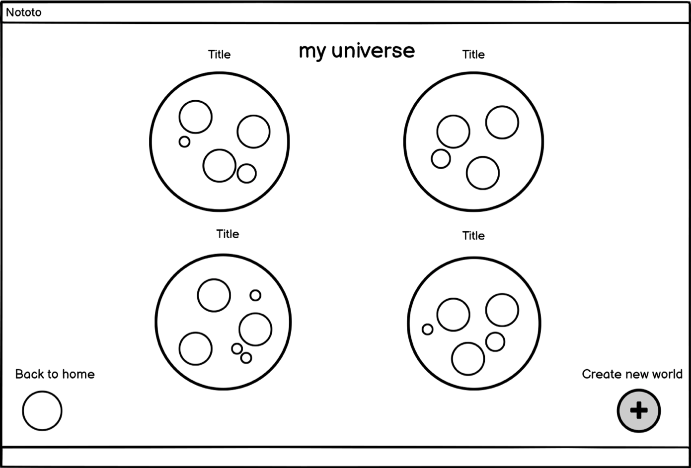

Nototo is a note-taking software that allows users to take advantage of their visual-spatial memory. The intention behind the workspace is to store any volume of information in however layout a user decides. The result is an infinite 'map' that the user(s) continuously builds upon. A key feature is the zooming aspect of the workspace, whereby all the notes are visible when a user zooms out and as the user zooms in, more specific categories, media and notes become visible.
After some initial sketching, we created a lo-fi prototype for our interface to demonstrate the potential layout and functionalities.
 After creating a lo-fi prototype for Nototo, we made our hi-fi prototype in Figma to implement our ideas.
Here is the link to our prototype.
The following is the feedback that we recieved during a critique of our initial prototype:
To test our designs, we uploaded our prototype to Usertesting.com to recieve feedback that we could use to improve future iterations.
The following is the instructions we gave to the users on Usertesting.com:
Sign into Nototo, add an image to the blank document in the biology lab bubble, then, log out.
After the users tested the design, we asked them the following questions:
Overall, though the interface seemed intuitive to most of the users, there was confusion across the board for how to properly insert an image to a document or element in one of the bubbles. The users had to experiment clicking on various other elements first before realizing what they had to do. As a result, they would kind of backtrack to where their initial startpoint was and after exploring the other elements, move from that initial startpoint.
After taking feedback from the critique and user testing, we mapped out some potential changes to the prototype for future iterations. For one, we could clarify in the user testing instructions that the user should be adding a document to the lab section as they go through the test, or have the testng instructions guide the user rather than just give them a task and a question at the beginning. In terms of layout, perhaps making the add element button more of a fan with multiple functionalities (add image, text, etc.) that pops up when the user hovers over the button would improve the user experience. We could also simplify the navigation bar at the top of the document to make it clear to the user that to insert elements they should use the add element button.
This project allowed me to go through the iterative design process and understand the importance of user testing. I have also learned the importance of clear instruction when conducting user testing in order to produce good data.